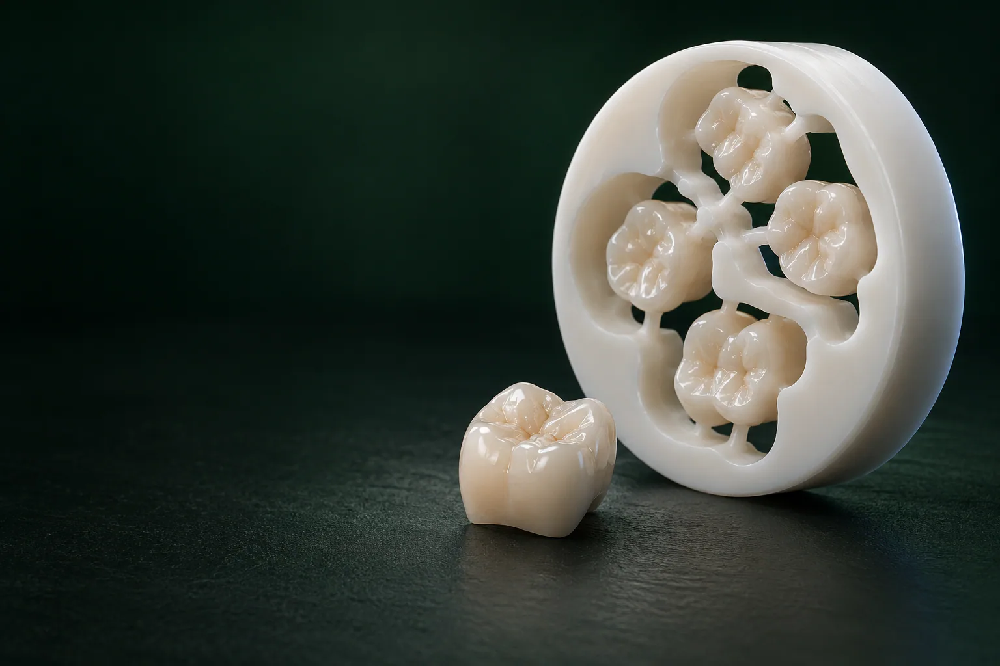

Солодухин Евгений Викторович
Главный врач, ортопед
Протезирование и восстановление зубов, протезы на имплантах
Записаться к врачу
Циркониевая коронка на зуб — безметалловая коронка из диоксида циркония для передних и жевательных зубов: она прочная и не даёт тёмной каймы у десны.
Имеются противопоказания. Необходима консультация специалиста.
В стоматологии «Умная Медицина» в пос. Удельная (Раменский округ) такая коронка стоит от 34 100 ₽ — и цельноциркониевая, и с керамической облицовкой. Точную стоимость стоматолог-ортопед Солодухин Е. В. или Алиханова С. А. рассчитает на консультации (500 ₽) после осмотра и снимка.
Такую коронку делают из диоксида циркония — прочной керамики без металла; «цирконий» — просто короткое название этого материала. Главное отличие от металлокерамики — белый, а не металлический каркас. Поэтому такая коронка не просвечивает металлом у десны, даже если десна со временем немного опустится. Цирконий выбирают и при аллергии на металлы.
Внешний вид коронки зависит от вида циркония и подбора цвета. Оттенок подбирают по шкале под соседние зубы, а у облицованных коронок техник наносит керамику слоями и повторяет переход цвета эмали.
Зубные коронки из диоксида циркония подходят и для передних, и для жевательных зубов. По устройству они бывают цельными и облицованными: цельноциркониевая (монолитная) коронка целиком состоит из циркония и прочнее, а у облицованной каркас покрыт керамикой — она выглядит естественнее, но облицовка может скалываться. Подробнее — в разделе о видах. Общие вопросы — когда нужна коронка, можно ли ставить её на живой зуб — разобраны на странице коронки на зубы.
Минимальная цена — 34 100 ₽ за единицу, причём она одинакова для цельноциркониевой и для облицованной коронки, поэтому вид выбирают по показаниям, а не по прайсу. В таблице указана стоимость одной коронки; подготовку зуба считают отдельно.
Коронка и сопутствующие услуги (прайс um-med.com)
Цены «от» в таблице — минимальные, точную сумму ортопед называет после осмотра и снимка. Цены актуальны на 17.10.2026.
Имеются противопоказания. Необходима консультация специалиста.
уточняем у клиники
Итоговая сумма складывается не только из самой коронки. В план лечения входят этапы:
Частый вопрос — входит ли в цену работа врача: от этого итоговая сумма может отличаться. Что из перечисленного уже включено в «от 34 100 ₽», уточняйте у администратора уточняем у клиники. Многое зависит от подготовки: если зуб здоров и лечить его не нужно, часть этапов не понадобится. Расчёт для вашего случая ортопед сделает на консультации — все этапы «под ключ» будут записаны в плане лечения с фиксированной стоимостью.
Для сравнения: металлокерамическая коронка на свой зуб стоит от 26 400 ₽, циркониевая — от 34 100 ₽. Разница минимальных цен — 7 700 ₽.
Условия — на странице рассрочка и налоговый вычет.
Коронки различают по устройству — цельные или с облицовкой — и по тому, насколько материал прозрачен.
Монолитную коронку изготавливают из цельного блока циркония без дополнительного слоя керамики. Это самый прочный вариант, поэтому его чаще ставят на жевательные зубы. Облицовки, которая могла бы отколоться, нет, и риск скола ниже. Минус — такая коронка менее прозрачна, чем облицованная или керамическая E.max, и в зоне улыбки это может быть заметно.
В многослойной заготовке цвет и прозрачность плавно меняются от шейки к режущему краю, как у естественного зуба. Коронка при этом остаётся цельной, без отдельного слоя облицовки. Такой цирконий выбирают для зоны улыбки, когда важны и естественный вид, и прочность уточняем у клиники.
Тонкий каркас из циркония зубной техник вручную покрывает керамикой, слой за слоем. Так коронка получает естественный переход цвета и блеск эмали — частый выбор для передних зубов. Слабое место — облицовка: при перегрузке и бруксизме она может скалываться.
Заготовки (блоки) для коронок различаются прозрачностью и прочностью: более прозрачные идут на передние зубы, более плотные и прочные — на жевательные. Каких производителей использует лаборатория, расскажет ортопед уточняем у клиники.
Оттенок коронки сверяют с соседними зубами. Опаковый (непрозрачный) цирконий хорошо скрывает потемневший зуб или металлическую вкладку, поэтому его выбирают для таких случаев и для жевательных зубов. Прозрачный — когда коронка на виду, а зуб под ней светлый.
Плюсы и минусы стоит взвесить до лечения, чтобы ожидания совпали с результатом.
Чем цирконий лучше металлокерамики? Основные плюсы связаны с тем, что в нём нет металла:
Есть у циркония и ограничения:
Для каждого пациента эти плюсы и минусы весят по-разному, поэтому ортопед оценивает их под конкретную ситуацию — прикус, бруксизм, цвет соседних зубов и состояние самого зуба.
Что выбрать, зависит от зуба и задачи. Металлокерамика доступнее и давно применяется в протезировании, цирконий не содержит металла и выглядит естественнее у десны. В таблице — три самых частых материала.
Сравнение: цирконий, металлокерамика и E.max
| Параметр | Цирконий | Металлокерамика | E.max |
|---|---|---|---|
| Металл в составе | Нет | Есть, каркас | Нет |
| Край у десны | Тёмной каймы нет | При опущении десны может быть заметна тёмная полоска | Тёмной каймы нет |
| Прозрачность | Средняя: у облицованных выше, у монолитных ниже | Ниже: каркас непрозрачный | Высокая |
| Прочность | Высокая | Высокая | Ниже, чем у циркония |
| Объём обточки | У монолитных меньше, чем под металлокерамику; у облицованных сопоставим | Больше | Умеренный |
| Для каких зубов | Передние и жевательные, мосты | Жевательные и передние, мосты | Чаще передние |
| Цена | от 34 100 ₽ | от 26 400 ₽ | от 34 100 ₽ |
Какой материал лучше в вашем случае? Для зоны улыбки и при аллергии на металл чаще выбирают цирконий. На жевательный зуб при ограниченном бюджете разумной остаётся металлокерамика: по прочности она подходит, а край у десны на дальних зубах почти не виден. Бывает, что на соседних зубах оказываются циркониевая и металлокерамическая коронки — тогда оттенок подбирают так, чтобы разница в цвете была минимальной.
Для передних зубов чаще стоит другой выбор — E.max или цирконий. Решают по состоянию зуба: E.max прозрачнее и ближе к эмали, но если зуб под коронкой потемнел или в нём металлическая вкладка, опаковый цирконий скроет это надёжнее. При бруксизме врач чаще склоняется к цирконию: он прочнее.
Цирконий нужен не всегда. При небольшом разрушении зуба хватает вкладки или реставрации, а если бюджет ограничен и коронка нужна на жевательный зуб, подойдёт металлокерамика. Окончательно материал выбирает ортопед после осмотра. Подробнее о других материалах — на страницах металлокерамические коронки и коронки E.max.
Здесь цирконий чаще берут с керамической облицовкой: так коронка получает переход цвета от шейки к краю. Оттенок согласуют с соседними зубами. Внешне керамика E.max и цирконий на передних зубах похожи, но E.max прозрачнее, а цирконий прочнее и лучше скрывает тёмный зуб под коронкой.
Для жевательных зубов чаще выбирают монолитный цирконий: он выдерживает жевательную нагрузку, а облицовки, которая может отколоться, у него нет. Стоит такая коронка столько же, сколько на передний зуб: от 34 100 ₽. Перед фиксацией врач проверяет прикус и полирует коронку, чтобы она не стирала зубы-противники.
Циркониевый мост заменяет отсутствующий зуб с опорой на соседние: опорные зубы обтачивают под коронки, а между ними располагается искусственный зуб. На жевательные зубы такой мост ставят, если опоры крепкие и выдержат нагрузку; подробнее — на странице мостовидный протез уточняем у клиники. Если опереться не на что, такую коронку можно поставить на имплант — см. коронка на имплант. Из этого материала делают и протезы на всю челюсть: постоянный циркониевый протез на имплантах стоит от 258 500 ₽ (это цена самого протеза, хирургический этап оплачивается отдельно).
Восстановление зуба коронкой из диоксида циркония рекомендуют, когда:
Противопоказания и ограничения:
Решение принимает ортопед после осмотра и снимка.
Обычно нужно несколько визитов. Вот как проходит лечение:
Сколько дней займёт изготовление коронки из диоксида циркония и сколько понадобится визитов, ортопед скажет при составлении плана уточняем у клиники. Если зуб не требует дополнительной подготовки, визитов меньше, чем когда сначала нужно лечить каналы или ставить вкладку.
Срок службы циркониевых коронок зависит от гигиены, прикуса, бруксизма, регулярности контрольных осмотров и состояния зуба под коронкой. Поэтому заранее называть его в годах мы не будем: он индивидуален.
Чаще всего недостатки циркония связывают со сколами. Сам циркониевый каркас очень прочный, скол обычно случается у облицовки. Небольшой скол иногда сглаживают полировкой — она нужна и после любой коррекции прикуса. При мелких сколах облицовки возможна реставрация без снятия коронки уточняем у клиники. Если скол крупный или под коронкой появился кариес, коронку меняют. Снимают такую коронку распилом; в прайсе снятие коронки — от 800 ₽ уточняем у клиники.
Срок гарантии на коронки и её условия — контрольные осмотры, профгигиена — указаны в договоре уточняем у клиники. Ортопед объясняет их до начала лечения.
Коронки ставят стоматологи-ортопеды клиники, а если зуб нужно подготовить — подключается эндодонтист.
Главный врач, ортопед
Протезирование и восстановление зубов, протезы на имплантах
Записаться к врачу
Ортопед
Восстановление зубов и протезирование, эстетичные коронки
Записаться к врачу
Терапевт, эндодонтист, гигиенист
Лечение кариеса и каналов, сохранение зубов
Записаться к врачуРейтинг клиники на Яндекс Картах — 5,0 (на 17.10.2026). Здесь — отзывы пациентов, которые дали письменное согласие на публикацию.
отзыв пациента
Ниже — фото работ до и после лечения; в подписи к фото — исходная ситуация, вид циркония, число визитов.
пример работы
Для зоны улыбки и при аллергии на металл чаще выбирают цирконий: в нём нет металла, и у десны не появляется тёмная кайма. Металлокерамика доступнее — от 26 400 ₽ — и хорошо подходит для жевательных зубов. Решает ортопед после осмотра.
По прайсу um-med.com цирконий стоит от 34 100 ₽, металлокерамика — от 26 400 ₽: разница минимальных цен — 7 700 ₽. Итоговая сумма зависит от состояния зуба и подготовки: лечения каналов, вкладки, временной коронки.
Цвет подбирают по шкале под соседние зубы, поэтому коронка не должна выделяться. Для передних зубов используют облицованный цирконий с плавным переходом оттенка, а опаковый — когда нужно скрыть потемневший зуб.
Каркас из циркония очень прочный. Скол возможен у облицовки — при перегрузке, бруксизме, разгрызании твёрдого; у монолитных коронок облицовки нет, поэтому риск ниже. Мелкие сколы иногда исправляют без снятия коронки.
Это зависит от гигиены, прикуса, бруксизма и регулярных осмотров, поэтому срок в годах заранее не назвать. Гарантийный срок указан в договоре уточняем у клиники.
После примерки её фиксируют на постоянный стоматологический цемент и проверяют прикус. На импланте коронку крепят к абатменту — об этом на странице коронка на имплант.
Монолитные (цельноциркониевые), многослойные и с керамической облицовкой. В клинике цельноциркониевая и облицованная коронки стоят от 34 100 ₽.
С прозрачными видами циркония это возможно. Поэтому вкладку подбирают вместе с типом циркония: в прайсе есть безметалловая культевая вкладка (от 5 500 ₽), а опаковый цирконий хорошо скрывает тёмную культю.
Да, но только распилом: снять её целой не получится. При замене изготавливают новую коронку.
Запишитесь на консультацию: план лечения с ценой по этапам
Имеются противопоказания. Необходима консультация специалиста.
Клиника находится в пос. Удельная, ул. Громова, 10/2 (Раменский округ), рядом с Жуковским: до него около 6 км, до Малаховки — около 3 км (здесь и ниже — по прямой); по соседству Быково, Ильинский, Родники, Островцы, Красково и Октябрьский. Приезжают к нам и из Люберец (около 11 км), Раменского (около 13,5 км) и Балашихи (около 20 км).
Время в пути: уточняем у клиники. Парковка и маршрут от ж/д станции: уточняем у клиники. Если вы ещё не решили, нужна ли коронка, запишитесь на консультацию стоматолога.
Подробнее о клинике — на странице стоматология в Удельной.
Имеются противопоказания. Необходима консультация специалиста.
Проверил: врач клиники · Обновлено: 17.10.2026 · Цены актуальны на 17.10.2026
пгт Удельная, Раменский округ. 5 минут от Жуковского.
Ежедневно с 9:00 до 21:00
+7 495 150-36-15К нам ездят из Жуковского, Раменского, Быкова, Ильинского, Красково, Малаховки, Островцов, Люберец и Балашихи.
Перезвоним за 5 минут, подберём врача и удобное время.
Оставьте номер, администратор перезвонит и ответит на вопросы.
Подойдёт КТ, панорама, прицельный снимок или фото плана лечения из другой клиники. Врач посмотрит и ответит в течение рабочего дня. Это бесплатно.
Хирург, ортопед и терапевт осмотрят вас вместе, сделаем КТ. Консультация бесплатная, стоимость лечения врач назовёт после осмотра.
Консультацию ведут вместе
 ХирургМихаилОртопедЕвгенийТерапевтАртём
ХирургМихаилОртопедЕвгенийТерапевтАртёмПервый визит бесплатно
Хирург, ортопед и терапевт посмотрят ваш случай вместе и предложат два-три варианта с ценой. Оставьте номер, администратор перезвонит и подберёт время.
Скидка 10% на лечение, если оплатить его в день консультации
Перезвоним за 5 минут, ежедневно с 9:00 до 21:00. Отправляя заявку, вы соглашаетесь на обработку персональных данных.